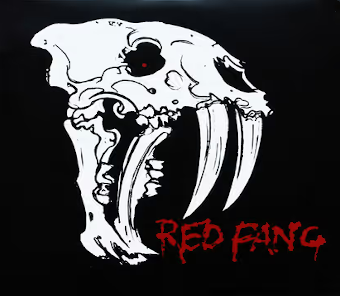
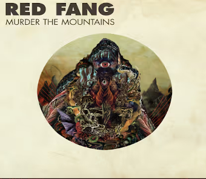
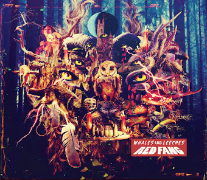
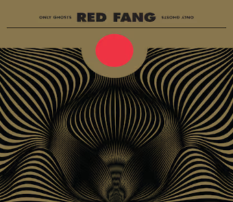
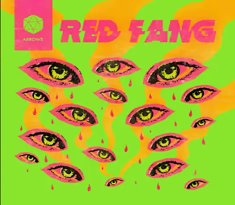

In 2005, David Sullivan, Maurice Bryan Giles, Aaron Beam, and John Sherman consolidated their powers to form Red Fang. They played their first, legendary show on the final night of that year, welcoming 2006 with buckets of sweat and splinters of destruction. Exactly one year later, they were opening for the Melvins and Big Business.
     back